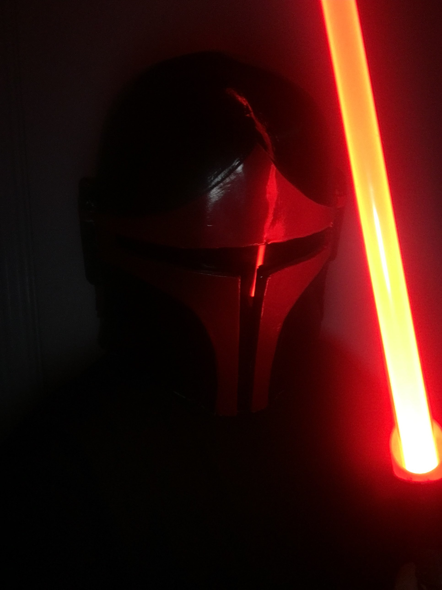
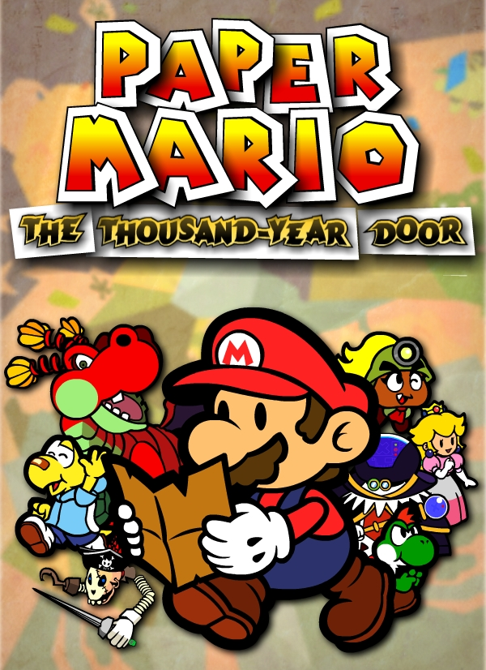
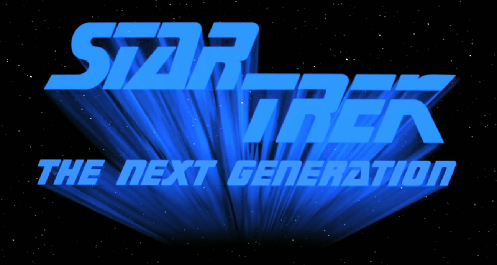

Cosplay


One of the things that I enjoy doing the most in my spare time is building my own cosplays that I wear at conventions. Unfortunately it is an expensive hobby, so I don't get to do it as much as I'd like.
Video Games
I also love playing video games! Below you can see a few of my selection for what I would say are my favourite games of all time!

The Legend of Zelda - Twilight Princess is my favourite of the franchise. With an incredibly bleak atmosphere where you stand as the only source of light, bringing hope to the people, it's one of the best efforts of narrative story telling the series has to offer. It also has one of the most fun worlds to explore, with secrets hidden around every corner, I always have fond memories going back and playing this game again.

The Outer Wilds is one of the single greatest gaming experiences I have had in my entire life. I could leave it there. But I won't.
The Outer Wilds is a game about mystery and exploration, where you are not locked to any single path. You are free to explore as you see fit, to uncover the mysteries the game has set before you, and the game lets you do it all at your own pace. But this isn't what makes this game unique. No, but it is a big part. The reason I love this game so much is because it gives you every piece of information you need to understand it's mystery. And when I found out the answer to the mystery it shook me to my core. I was finished. I understood the mystery, and the message the game was trying to tell me. I was changed by playing this game.
The Outer Wilds is one of my favourite games of all time. I have also never finished it.

Everyone knows Mario. Most people know how his games go as well. Grasslands, Desertworld, Jungleworld, Waterworld, Ice Land, Boss.
It can get pretty repetetive after a while. So when I play a Mario game that entirely changes that, and does something completely new, I'm always interested, thanks to The Thousand Year Door. You start the game not in the nice, shiny Mushroom Kingdom, but the dingy pirate town of Rogueport, a town where right in the centre is a gallows. Every time I think about that fact I wonder how they got away with that in a Mario game. Sure the first world you go to is the Grasslands and you fight a Dragon, but pretty soon you're taking part in a wrestling league, or solving Agatha Christie style murder mysteries on a train, before taking part in a Mafia conspiracy then fighting aliens on the moon!
Seriously, if you've not played this game, you need to.
TV Shows and Movies


I have always been a huge fan of Science Fiction. It's a genre that means a lot to me, especially when it shows a very positive future for mankind. I think it's very easy to get wrapped up in the pessimism of our age in social media, but I love shows like Star Trek and Doctor Who that show that Humanity has amazing potential for greatness, and that there is still hope for us yet.

But I couldn't possibly forget to mention Star Wars. I don't think I would be where I am today if not for Star Wars. I would be a completely different person. From the music, to the characters, to some of the most iconic scenes in all of cinema history, Star Wars is a part of my identity. It inspired me to want to make my own props and costumes, and sparked my artistic love that I still have to this day. It also created my passion for story telling and world design.
Finally, I think it has no small part in my love for technology. Watching as technology advances, and we come closer and closer to the weird and wonderful ideas that these shows and movies put forwards as fantasy has always been a big part of why I wanted to be a creative person.